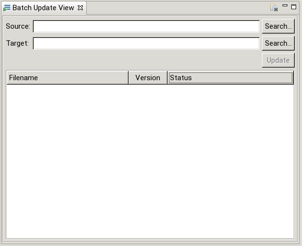

The Batch Update View is not (like the other views) part of the scan building process. Its only task is to update a folder of scan descriptions (SCMLs) to the current version (if necessary).
An update of a scan description is necessary if it was created with an older version of eveCSS. When opening a (single) file in the Editor the update is performed automatically (the file just has to be saved afterwards). For a large amount of files this process is not feasible.
The Batch Update View can be opened just like any other view (Window -> Show View -> Other -> EVE Editor -> Batch Update View). The (initially empty) view is shown in the following figure:

To perform an update a „source” directory containing the files that should be updated and a „target” directory defining where the updated files should be saved to have to be specified. The table shows the files discovered in the source directory as well as their current version. During the update process the file status is updated. A file has one of the following statuses:
| Icon | Status | Description |
|---|---|---|
| | Pending | The file is currently being read. |
| | Error | Error reading the file. |
| up to date | The file is (already) up to date. | |
| outdated | The file is outdated and will be upgraded. | |
| updating | The file is currently updating. | |
| updated | The file has been updated. | |
| Error during update | An update occurred while updating the file. |
Please note that a file could only be updated if it has at least version 2.3 (i.e. was created with eveCSS v1.18 or newer).
An update is only possible if both source and target are given (and unequal).
The view can be reset (cleared) by clicking the view’s toolbar icon.
An example of a complete update process is described here.